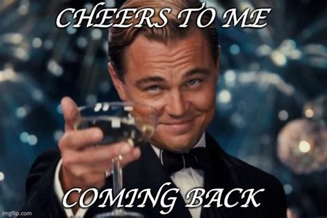

About Me
I love computers. I remember using windows XP on the cathodic screen in the living room of my little appartment. I’m now interested in AI. I want to build and deliver. That’s all I need. Open-source is what we need.
Here’s a glimpse into my journey so far:
Skills
- Artificial Intelligence: AI and machine learning, with a focus on Large Language Models (LLMs). Large Action Model soon.
- Development: Python, R, LaTeX, and web front-end technologies.
- Data Visualization: Tableau
- Operating Systems: Comfortable with MacOS, Windows, Linux, and Android Custom ROMs.
- Hardware: I enjoy building and customizing PCs (in fact, a rack is all you need)
- More generally: Research, organizational skills, open-mindedness, versatility
Education
- Computer Engineering School: Studying at ESIEA in Paris, with international experiences in Finland and Ireland.
- Certifications:
- Google Cloud Digital Leader
Experience
AI Intern
- Somewhere soon | April - August 2024 (4 months) |
LLM AI Research Trainee (Elective Internship)
- TALAN Research Center | June - July 2023 (6 weeks) | Paris, France
- Applied LLMs in chatbot development, including model inference and Azure Web Apps deployment.
- Explored LLMs through academic papers and GitHub repositories.
Technical Support Intern
- ATOS | July 2021 (4 weeks) | Boulogne-Billancourt, France
- Supported industrial IT technical issues, managed sales administration, and handled stock inventory.
- Integrated PC components and fulfilled orders.
Projects
LLMs Compression Evaluation
- TALAN Research Center x ESIEA Research Center | 2023-2024 (10 weeks)
- Initiated and directed a project evaluating LLM compression methods, fostering a successful collaboration between two research centres.
- Paper currently in write mode
Emotional Tutorial System
- Collaboration with ESIEA’s research laboratory | 2022-2023, Spring Semester
- Developed a system to analyze students’ affective states using facial recognition and emotion analysis algorithms.
Web Presence
As a GenZ, back in the day, I was all about creating YouTube content, mainly on Minecraft and Black Ops 2 from 2013 to 2016. For no real reason, I launched some websites, all about spreading my high-tech and web culture hype. I kept that vibe going, writing articles from 2017 to 2019. And now, here I am, circling back to that world again.

🛠️ Tools
- Visual Code
- JetBrains
- Git
- HuggingFace
- Virtualization Software
- Overleaf
- Notion
- Zotero
- Figma
- Office 365
- Adobe Creative Suite
Activities
- Huge sports enthusiast, currently at the gym
- Guitar at Music Conservatory
- Drone photography enthusiast
- Avid reader
Languages
- French (Native)
- English (TOEIC 925/990)
- Italian (Basic Conversational)